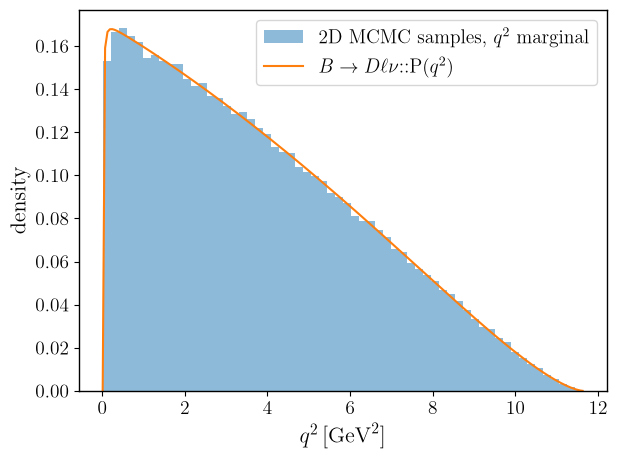
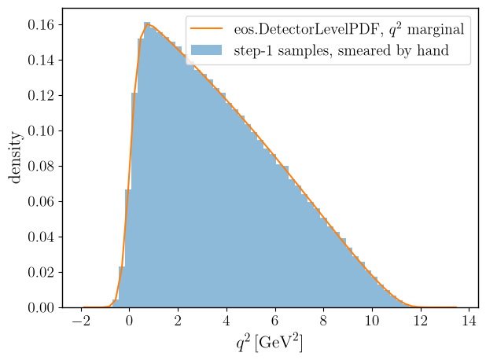
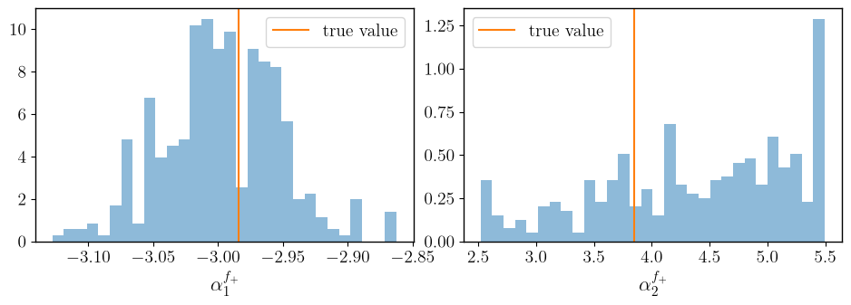

Detector-Level PDFs
EOS can convolve a truth-level probability density function (PDF) with a detector resolution function to obtain a detector-level PDF, using eos.DetectorLevelPDF. The convolution is carried out numerically, via a multi-dimensional discrete Fourier transform, and its result is itself a SignalPDF: it can be evaluated, sampled, and plotted like any other PDF.
This notebook illustrates the full pipeline for the decay \(\bar{B}^0\to D^+\mu^-\bar\nu\):
we build the truth-level 2D PDF in \(q^2\) and \(\cos\theta_\ell\), sample it, and check that the \(q^2\) marginal of the samples agrees with the built-in 1D PDF;
we build a Gaussian detector resolution in \(q^2\) (with no smearing in \(\cos\theta_\ell\)) from EOS expressions, and combine it with the truth-level PDF into a detector-level PDF;
we validate the convolution by comparing a histogram of the step-1 samples, smeared by hand, against the 1D \(q^2\) marginal of the detector-level PDF;
we write a set of “observed” (smeared) events to an eos.data.UnbinnedLikelihood data object, and fit the two leading \(\bar{B}\to D\) form factor shape parameters to them, driving the fit through an eos.AnalysisFile as in the other user-guide notebooks;
we close the loop by comparing the recovered parameters against the values used to generate the samples in step 1.
The convolution that a detector-level PDF performs is circular: every axis of its grid must be padded with a region in which both the truth PDF and the resolution are negligible, or probability will wrap around from one edge of the grid to the other. We use this padding throughout the notebook, and return to it explicitly in step 2.
[1]:
import eos
import numpy as np
import matplotlib.pyplot as plt
import os
1. Truth-level 2D PDF
We use the decay \(\bar{B}^0\to D^+\mu^-\bar\nu\), described by the two kinematic variables \(q^2\) and \(\cos\theta_\ell\). We work in the \(\mathcal{O}_\text{WET}\) effective theory (model: WET), with every Wilson coefficient set to zero except for \(c_{VL}\), which is kept at its Standard-Model value. We also set the muon mass to (approximately) zero, so that the scalar form factor \(f_0\) does not contribute; EOS represents an exactly vanishing lepton mass by a
division by zero internally, so we use a numerically negligible but finite value instead.
[2]:
params = eos.Parameters()
# The muon keeps its physical mass. A massless lepton would make the density drop
# discontinuously to zero at q2 = 0, a step the sampling grid cannot represent; at finite m_mu the
# density instead vanishes smoothly at threshold q2 = m_mu^2. The price is that the scalar form
# factor f_0 now contributes, so its parameters have to be held fixed in the fit below.
# WET, with only the Standard-Model value of c_VL switched on
params.set('cbmunumu::Re{cVL}', 1.0)
params.set('cbmunumu::Im{cVL}', 0.0)
params.set('cbmunumu::Re{cVR}', 0.0)
params.set('cbmunumu::Im{cVR}', 0.0)
params.set('cbmunumu::Re{cSL}', 0.0)
params.set('cbmunumu::Im{cSL}', 0.0)
params.set('cbmunumu::Re{cSR}', 0.0)
params.set('cbmunumu::Im{cSR}', 0.0)
params.set('cbmunumu::Re{cT}', 0.0)
params.set('cbmunumu::Im{cT}', 0.0)
# 'form-factors' selects the parametrization: without it B->Dlnu defaults to BSZ2015 and the
# @SSE parameters fitted below would have no effect at all
OPTIONS = eos.Options(**{ 'l': 'mu', 'q': 'd', 'model': 'WET', 'form-factors': 'SSE' })
# the true values of the form factor shape parameters, used below to generate samples and, in the
# end, to judge the closure of the fit
ALPHA1_TRUE = float(params['B->D::alpha^f+_1@SSE'])
ALPHA2_TRUE = float(params['B->D::alpha^f+_2@SSE'])
print(f'alpha^f+_1@SSE = {ALPHA1_TRUE}')
print(f'alpha^f+_2@SSE = {ALPHA2_TRUE}')
alpha^f+_1@SSE = -2.9843
alpha^f+_2@SSE = 3.8517
[3]:
# the physical support of q2 is [m_mu^2, (m_B - m_D)^2]; cos(theta_l) is unconstrained on [-1, +1]
Q2_PHYS_MIN = float(params['mass::mu'])**2
Q2_PHYS_MAX = (float(params['mass::B_d']) - float(params['mass::D_d']))**2
truth_kinematics = eos.Kinematics({
'q2': 2.0, 'q2_min': Q2_PHYS_MIN, 'q2_max': Q2_PHYS_MAX,
'cos(theta_l)': 0.0, 'cos(theta_l)_min': -1.0, 'cos(theta_l)_max': 1.0,
})
truth_pdf = eos.SignalPDF.make('B->Dlnu::P(q2,cos(theta_l))', params, truth_kinematics, OPTIONS)
rng = np.random.mtrand.RandomState(23480)
truth_samples, truth_density = truth_pdf.sample_mcmc(N=400000, stride=5, pre_N=1000, preruns=3, rng=rng)
Prerun 0 out of 3
Prerun 0: acceptance rate is 81%
Prerun 1 out of 3
Prerun 1: acceptance rate is 23%
Prerun 2 out of 3
Prerun 2: acceptance rate is 28%
Main run: started ...
Main run: acceptance rate is 27%
We compare the \(q^2\) marginal of the 2D samples against the built-in 1D PDF B->Dlnu::P(q2).
[4]:
q2_kinematics = eos.Kinematics({'q2': 2.0, 'q2_min': Q2_PHYS_MIN, 'q2_max': Q2_PHYS_MAX})
q2_pdf = eos.SignalPDF.make('B->Dlnu::P(q2)', params, q2_kinematics, OPTIONS)
q2_grid = np.linspace(Q2_PHYS_MIN, Q2_PHYS_MAX, 200)
q2_log_norm = q2_pdf.normalization()
q2_curve = np.array([np.exp(q2_pdf.log_pdf([q2v]) - q2_log_norm) for q2v in q2_grid])
fig, ax = plt.subplots()
ax.hist(truth_samples[:, 0], bins=60, range=(Q2_PHYS_MIN, Q2_PHYS_MAX), density=True,
alpha=0.5, label='2D MCMC samples, $q^2$ marginal')
ax.plot(q2_grid, q2_curve, color='C1', label=r'$B\to D\ell\nu$::P($q^2$)')
ax.set_xlabel(r'$q^2\,[\mathrm{GeV}^2]$')
ax.set_ylabel(r'density')
ax.legend()
fig.tight_layout()

2. A Gaussian detector resolution
We build a resolution over the offsets of \(q^2\) and \(\cos\theta_\ell\) from EOS expressions: a Gaussian of width \(\sigma_{q^2} = 0.3\,\mathrm{GeV}^2\) in the \(q^2\) offset, and an effectively vanishing width in the \(\cos\theta_\ell\) offset, which realises “no smearing” as a numerical Kronecker delta once sampled on the grid below. The grammar used by eos.Observables.insert has no erf, so the resolution’s own
normalization – never used by the convolution, which renormalises the kernel to unit sum – is computed by hand and registered as a second, constant-valued expression observable.
[5]:
SIGMA_Q2 = 0.3 # GeV^2
EPS_COS = 1.0e-3 # cos(theta_l): a width far below the grid spacing acts as a numerical delta
kernel_expr = (
f'exp((0.0 - {{q2}}^2/(2*{SIGMA_Q2}^2))) * '
f'exp((0.0 - {{cos(theta_l)}}^2/(2*{EPS_COS}^2)))'
)
kernel_name = eos.QualifiedName('Resolution::kernel@detector-level')
eos.Observables().insert(kernel_name, '', eos.Unit.Unity(), eos.Options(), kernel_expr)
# the (infinite-domain) normalization of the product of two Gaussians; irrelevant to the
# convolution itself, which renormalises the kernel to unit sum, but computed for completeness
norm_value = (np.sqrt(2.0 * np.pi) * SIGMA_Q2) * (np.sqrt(2.0 * np.pi) * EPS_COS)
norm_name = eos.QualifiedName('Resolution::normalization@detector-level')
eos.Observables().insert(norm_name, '', eos.Unit.Unity(), eos.Options(), repr(float(norm_value)))
resolution_name = eos.QualifiedName('Resolution::P(q2,cos(theta_l))@detector-level')
eos.SignalPDFs().insert(
resolution_name, 'Gaussian resolution in q2, no smearing in cos(theta_l)', eos.Options(),
kernel_name, ['q2', 'cos(theta_l)'],
norm_name, ['q2_min', 'q2_max', 'cos(theta_l)_min', 'cos(theta_l)_max'],
)
The convolution is circular, so the grid must extend well beyond the physical \(q^2\) range on both sides – by about \(6\,\sigma_{q^2} \approx 1.8\,\mathrm{GeV}^2\) – so that both the truth PDF and the resolution are negligible at the wrap-around boundary. A reader adapting this example to a different resolution width or a different decay should re-check this padding first: it is the most common source of a silently wrong result. No such padding is needed for \(\cos\theta_\ell\), since it is not smeared and already spans its full physical range. The number of points per axis must be even, per the requirements of the real discrete Fourier transform used internally.
[6]:
AXES = [
{ 'variable': 'q2', 'min': -2.0, 'max': 13.6, 'points': 128 },
{ 'variable': 'cos(theta_l)', 'min': -1.0, 'max': 1.0, 'points': 16 },
]
# a dedicated cache: this DetectorLevelPDF is only used standalone in this notebook, not as part of
# an eos.LogLikelihood
cache = eos.ObservableCache(params)
detector_pdf = eos.DetectorLevelPDF.make(cache, 'B->Dlnu::P(q2,cos(theta_l))', resolution_name, OPTIONS, AXES)
# DetectorLevelPDF never updates the cache it was given; the owner of the cache does
cache.update()
3. Validating the convolution
We smear the step-1 \(q^2\) samples by hand with the same Gaussian, and compare the resulting histogram against the \(q^2\) marginal of detector_pdf, obtained by integrating over \(\cos\theta_\ell\) numerically. Since the resolution factorises into a \(q^2\) Gaussian and a \(\cos\theta_\ell\) delta, this marginal equals the 1D convolution of the truth PDF’s \(q^2\) marginal with the same Gaussian – exactly what the hand-smeared histogram estimates.
[7]:
def detector_marginal_q2(pdf, q2_values, n_cos=41):
"""Marginalize a 2D detector-level PDF over cos(theta_l) by numerical integration.
log_pdf() is evaluate(), i.e. the unnormalized log density, so the PDF's own log-normalization
is subtracted to obtain a proper density -- exactly as for any other SignalPDF.
"""
log_norm = pdf.normalization()
cos_values = np.linspace(-1.0, 1.0, n_cos)
result = np.empty_like(q2_values)
for i, q2v in enumerate(q2_values):
density = np.array([np.exp(pdf.log_pdf([q2v, cv]) - log_norm) for cv in cos_values])
result[i] = np.trapezoid(density, cos_values)
return result
rng_smear = np.random.mtrand.RandomState(90210)
q2_smeared = truth_samples[:, 0] + rng_smear.normal(0.0, SIGMA_Q2, size=truth_samples.shape[0])
raw_counts, hist_edges = np.histogram(q2_smeared, bins=60, range=(AXES[0]['min'], AXES[0]['max']))
hist_centers = 0.5 * (hist_edges[:-1] + hist_edges[1:])
bin_width = hist_edges[1] - hist_edges[0]
hist_counts = raw_counts / (q2_smeared.size * bin_width)
detector_curve = detector_marginal_q2(detector_pdf, hist_centers)
# The histogram is a finite sample, so the right yardstick is its own Poisson uncertainty, not a
# relative deviation: in the sparse tails a large relative deviation is expected and says nothing
# about the convolution. Restricting to bins with enough entries for the Poisson error to be
# meaningful, the pulls should be O(1).
q2_fine = np.linspace(Q2_PHYS_MIN, Q2_PHYS_MAX, 400)
p1d_fine = np.array([np.exp(q2_pdf.log_pdf([v]) - q2_log_norm) for v in q2_fine])
reference = np.array([
np.trapezoid(p1d_fine * np.exp(-0.5 * ((c - q2_fine) / SIGMA_Q2)**2) / (np.sqrt(2.0 * np.pi) * SIGMA_Q2), q2_fine)
for c in hist_centers
])
deviation = np.abs(detector_curve - reference).max() / reference.max()
print(f'max deviation from the quadrature reference: {deviation:.2e}')
print(f'sample mean q2: {q2_smeared.mean():.4f} PDF: {np.trapezoid(hist_centers * reference, hist_centers) / np.trapezoid(reference, hist_centers):.4f}')
fig, ax = plt.subplots()
ax.bar(hist_centers, hist_counts, width=(hist_edges[1] - hist_edges[0]), alpha=0.5,
label='step-1 samples, smeared by hand')
ax.plot(hist_centers, detector_curve, color='C1', label='eos.DetectorLevelPDF, $q^2$ marginal')
ax.set_xlabel(r'$q^2\,[\mathrm{GeV}^2]$')
ax.set_ylabel(r'density')
ax.legend()
fig.tight_layout()
max deviation from the quadrature reference: 4.91e-03
sample mean q2: 3.7852 PDF: 3.7877

4. An unbinned fit
We now generate a set of \(\sim 2000\) “observed” events by smearing a subsample of the step-1 truth-level samples, write them to an eos.data.UnbinnedLikelihood data object together with the (unnormalized) resolution kernel expression, and fit the form factor shape parameters \(\alpha^{f_+}_1\) and \(\alpha^{f_+}_2\) in the “SSE” parametrization to them – \(\alpha^{f_+}_0\), \(V_{cb}\), and every other parameter are
kept fixed. The fit is driven through eos.AnalysisFile, reading detector-level.yaml, which declares the unbinned-B-to-D likelihood component as type: unbinned.
[8]:
# the standalone PDF is no longer needed; free its grid before the fit builds its own
del detector_pdf, cache
from eos.data.unbinned_likelihood import UnbinnedExpressionResolutionDescription
N_FIT = truth_samples.shape[0]
rng_fit = np.random.mtrand.RandomState(271828)
q2_obs = truth_samples[:, 0] + rng_fit.normal(0.0, SIGMA_Q2, size=N_FIT)
cos_obs = truth_samples[:, 1]
observations = np.column_stack([q2_obs, cos_obs])
EOS_DATA_DIRECTORY = './detector-level-data'
eos.data.UnbinnedLikelihood.create(
os.path.join(EOS_DATA_DIRECTORY, 'observed-events'),
axes=AXES,
resolution=UnbinnedExpressionResolutionDescription(expression=kernel_expr),
observations=observations,
)
[9]:
EOS_BASE_DIRECTORY = './detector-level-base'
eos.tasks.sample_mcmc('detector-level.yaml', 'FF-fit', chain=0, base_directory=EOS_BASE_DIRECTORY,
pre_N=250, preruns=2, N=400, stride=3)
5. Closure
We compare the posterior mean and standard deviation of \(\alpha^{f_+}_1\) and \(\alpha^{f_+}_2\) against the values used to generate the samples in step 1, and report the pulls \((\text{fit} - \text{true}) / \sigma_\text{fit}\).
The two parameters are not equally well determined. The unbinned likelihood constrains \(\alpha^{f_+}_1\) well: its posterior is some five times narrower than the uniform prior it was given, so the agreement with the input value is a genuine closure test. \(\alpha^{f_+}_2\), by contrast, comes out essentially prior-limited — its posterior width is very close to the prior’s. That is physics rather than a shortcoming of the method: a \(q^2\) spectrum smeared with \(\sigma_{q^2} = 0.3\,\textnormal{GeV}^2\) carries little information about the sub-leading shape coefficient, and the log-likelihood varies by less than \(0.1\) across the whole prior range for \(\alpha^{f_+}_2\). Read its histogram below as the prior, not as a measurement.
[10]:
chain = eos.data.MarkovChain(os.path.join(EOS_BASE_DIRECTORY, 'data', 'FF-fit', 'mcmc-0000'))
alpha1_fit, alpha2_fit = np.mean(chain.samples, axis=0)
alpha1_std, alpha2_std = np.std(chain.samples, axis=0)
pull1 = (alpha1_fit - ALPHA1_TRUE) / alpha1_std
pull2 = (alpha2_fit - ALPHA2_TRUE) / alpha2_std
print(f'alpha^f+_1@SSE: true = {ALPHA1_TRUE:.4f}, fit = {alpha1_fit:.4f} +/- {alpha1_std:.4f}, pull = {pull1:+.2f}')
print(f'alpha^f+_2@SSE: true = {ALPHA2_TRUE:.4f}, fit = {alpha2_fit:.4f} +/- {alpha2_std:.4f}, pull = {pull2:+.2f}')
alpha^f+_1@SSE: true = -2.9843, fit = -2.9969 +/- 0.0459, pull = -0.28
alpha^f+_2@SSE: true = 3.8517, fit = 4.3732 +/- 0.8374, pull = +0.62
[11]:
fig, axes = plt.subplots(1, 2, figsize=(9.6, 3.6))
for ax, samples, true, name in zip(
axes, chain.samples.T, (ALPHA1_TRUE, ALPHA2_TRUE), (r'$\alpha^{f_+}_1$', r'$\alpha^{f_+}_2$')
):
ax.hist(samples, bins=30, density=True, alpha=0.5, color='C0')
ax.axvline(true, color='C1', label='true value')
ax.set_xlabel(name)
ax.legend()
fig.tight_layout()
